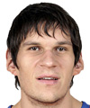

Mejores Jugadores
Jugador 1(Base)
El cerebro del equipo, ágil y con visión de juego. Orquesta la ofensiva con precisión.

Jugador 2(Escolta)
Tirador letal desde el perímetro, amenaza constante. Desata una lluvia de triples sin piedad.

Jugador 3(Alero)
Versátil y atlético, anotador en múltiples posiciones. Un cuchillo suizo en la cancha.

Jugador 4(Ala-Pivot)
Fuerza en la pintura, reboteador y defensor implacable. Una muralla bajo el aro.

Jugador 5(Pivot)
Gigante bajo el aro, intimidador en defensa y ataque. El ancla del equipo.

Jugador 6(Especialista)
Experto en defensa o tiro, aporta en momentos clave. El as bajo la manga.
¡El Dream Team de Barcelona!